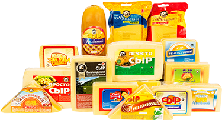

Только свежее, только натуральное
Вся продукция ЗАО «Урсус» производится исключительно из натурального коровьего молока — без растительных жиров. Сыры, масло, молоко и сливки из Чуйской долины.
Наша продукция
Натуральные сыры, масло, молоко и сливки. Наши сыры имеют нежную пластичную консистенцию и характерный сырный рисунок с дырочками.

Сырный завод ЗАО «Урсус»
Завод основан в 1940 году на базе Темен-Суйского молочного завода в Московском районе Чуйской области. Производственные цеха полностью модернизированы, а в основе бренда — белый медведь (лат. Ursus).
Молоко закупается у фермеров Московского и Панфиловского районов. Мощность завода — 30 тонн молочной продукции в сутки, над созданием сыров трудятся более 70 сотрудников. Продукция «Урсус» успешно продаётся в Кыргызстане и соседнем Казахстане.
Качество в каждой упаковке
Свяжитесь с нами
Оптовые поставки, сотрудничество и заказы — мы всегда на связи.